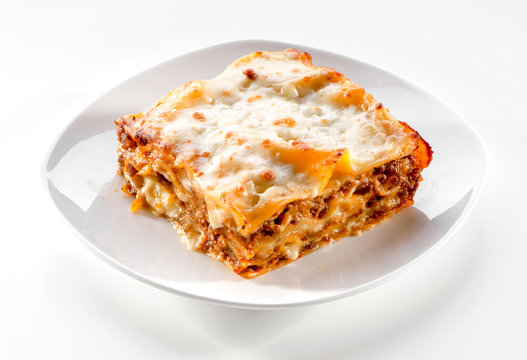

Lasagna

To make delicious creamy lasagna, you need to do three things.
Make the meat sauce, prepare the white sauce,
and assemble and bake the lasagna.
1. You need the following ingredients for the meat sauce:
- Beef
- Onion, garlic, carrot and celery
- Canned tomato and tomato paste
- Red wine
- Seasonings – beef bouillon cubes (stock cubes),
bay leaves, thyme, oregano, Worcestershire sauce
To make the meat sauce, follow these steps:
- Brown the beef in a large pan, then remove it and set aside.
- Sauté the onion, garlic, carrot and celery until softened.
- Add the canned tomato, tomato paste, red wine, and seasonings to the pan.
Simmer for 20-30 minutes until the sauce thickens.
- Return the browned beef to the pan and simmer for another 10 minutes.
2. For the white sauce, you need:
To make the white sauce, follow these steps:
- Melt the butter in a saucepan over medium heat.
- Whisk in the flour and cook for 1-2 minutes until its lightly golden.
- Gradually whisk in the milk and cook until the sauce thickens, about 5-7 minutes.
- Stir in the cheese until melted and smooth.
3. To assemble the lasagna, you need:
- lasagna sheets, and
- cheese
Assemble and bake the lasagna:
- Preheat your oven to 375°F (190°C).
- Spread a thin layer of meat sauce in the bottom of a baking dish.
- Place a layer of lasagna sheets over the sauce,
then spread a layer of white sauce and sprinkle with cheese.
- Repeat the layers until all ingredients are used,
finishing with a layer of meat sauce and cheese on top.
- Cover the dish with aluminum foil and bake for 25 minutes.
Then remove the foil and bake for an additional 25 minutes until the top is golden and bubbly.
- Let the lasagna cool for a few minutes before serving. Enjoy!
Home